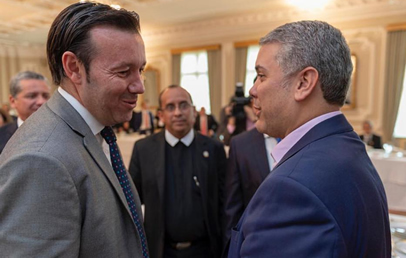

El nombre con el que miles de santandereanos conocen a su institución pública de educación superior ya no corresponde del todo a lo que es hoy. Mediante la Resolución MEN 019103, el Ministerio de Educación Nacional le cambió el carácter académico a las Unidades Tecnológicas de Santander: dejaron de ser, en los papeles, una institución tecnológica, y pasaron a ser una Institución Universitaria. El nombre completo ahora es Institución Universitaria Tecnológica de Santander, aunque la sigla que todos conocen, UTS, se queda igual.
No es la primera vez que la institución cambia de nombre. Nació en 1963 como el Instituto Tecnológico de Santander, se convirtió en el Tecnológico Santandereano en 1981 y, desde 1986, se llamó Unidades Tecnológicas de Santander. Cuatro décadas después, el salto de "unidad tecnológica" a "universitaria" no es solo una etiqueta: cambia qué tipo de programas puede crear la institución y qué título legal respalda cada diploma que entrega.
«Hace más de diez años nos trazamos un objetivo: convertirnos en una universitaria. Y hoy cumplimos ese objetivo.»
Omar Lengerke Pérez, rector de las UTS
Para Lengerke, que llegó a la rectoría en marzo de 2015, el cambio de carácter es el tercer gran hito de un mismo proceso de transformación, junto con la Acreditación Institucional en Alta Calidad que obtuvo el campus de Bucaramanga y la apertura de la nueva sede en Barrancabermeja. En la práctica, ser una institución universitaria le permite a las UTS crear programas profesionales y de posgrado que antes no podía ofrecer bajo su antiguo carácter tecnológico, lo que abre una etapa distinta tanto para quienes ya tienen un título de las UTS como para quienes apenas van a empezar a estudiar.
El cambio llegó acompañado de un gesto simbólico poco frecuente: cerca de 300 egresados, de 26 promociones distintas —desde quienes se graduaron en 1989 hasta quienes lo hicieron este mismo año—, volvieron al campus de Bucaramanga para recibir de nuevo su diploma, esta vez con el nombre de la Institución Universitaria Tecnológica de Santander. Entre ellos estaba Luis Fernando Pabón, graduado de Contaduría Pública, a quien la pandemia le canceló su ceremonia original en 2020; o Edwing Ramón Ayala, que regresó 25 años después de haberse graduado. "Estamos cumpliendo un sueño que había quedado pendiente, y lo estamos haciendo juntos", dijo Pabón ese día.

«Gracias por volver. Ustedes también son parte de lo que hoy somos», les dijo el rector a los egresados que regresaron. Unas semanas antes, en las ceremonias de grado de septiembre —la primera promoción en recibir su título ya como universitaria, más de 1.300 estudiantes en tres jornadas—, Lengerke había resumido así lo que no cambia con el nuevo nombre: «Habrá algo que no cambiará: esta siempre será su universidad».
El cambio de carácter no aparece de la nada: llega después de que la matrícula de la institución pasara de 21.612 estudiantes en 2015 a 30.689 en la actualidad, de que la oferta académica creciera de 30 a 64 programas, y de que casi el 98% de quienes estudian hoy en las UTS lo hagan sin pagar matrícula, un beneficio que no existía al comienzo de esta rectoría. Es, también, la continuación directa del camino que llevó a la Acreditación Institucional en Alta Calidad del campus de Bucaramanga, el primer logro de este tipo para una institución tecnológica —no universitaria— en Colombia.
El nombre en la fachada cambió, pero según insiste el propio rector, lo que sostiene a la institución no es la palabra que la describe, sino la gente que pasa por sus aulas. Con el nuevo carácter universitario, las UTS entran a una etapa en la que pueden crecer en programas sin perder lo que las hizo conocidas en Santander: ser públicas, ser gratuitas para casi todos sus estudiantes, y estar donde la gente vive.